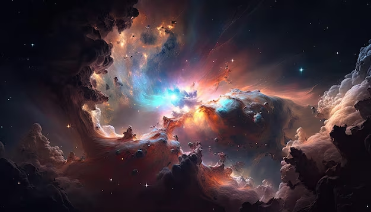

Planta Tierra Cultivando un Futuro Verde

Descripción: Un proyecto dedicado a la preservación y restauración de nuestro planeta. Aquí exploramos la importancia de la naturaleza, el impacto de nuestras acciones en el medio ambiente y cómo cada uno de nosotros puede contribuir a un futuro más sostenible. Objetivos: Promover la reforestación y la protección de los ecosistemas naturales. Crear conciencia sobre la importancia de la biodiversidad y el cuidado del agua. Fomentar un estilo de vida más ecológico y responsable. Actividades: Campañas de plantación de árboles y conservación del agua. Talleres educativos sobre sostenibilidad y reciclaje. Colaboración con comunidades locales para proteger áreas verdes.
La Galaxia: Explorando los Misterios del Cosmos

Descripción: Un proyecto que explora los misterios y maravillas del universo, desde la formación de estrellas hasta la estructura de las galaxias. Este espacio está diseñado para inspirar la curiosidad y fomentar el interés por la astronomía y la exploración espacial. Objetivos: Difundir conocimientos sobre astronomía y ciencias espaciales. Explorar las últimas investigaciones y descubrimientos en el campo de la astrofísica. Inspirar a jóvenes y adultos a mirar más allá de nuestro planeta y explorar el cosmos. Actividades: Charlas y talleres sobre astronomía. Observación de estrellas y eventos astronómicos. Publicación de artículos y noticias sobre descubrimientos espaciales.
Nebulosas y los Sueños de las Estrellas
Descripción: Un proyecto centrado en el estudio y la admiración de las nebulosas, esas fascinantes nubes de gas y polvo donde nacen las estrellas. Aquí nos sumergimos en los detalles de estos fenómenos cósmicos y su relevancia en la formación de nuestro universo. Objetivos: Explorar la naturaleza y formación de las nebulosas. Difundir información sobre las distintas tipos de nebulosas y su rol en el cosmos. Crear conciencia sobre la conexión entre estos procesos cósmicos y la existencia de vida en el universo. Actividades: Investigación y divulgación de la ciencia detrás de las nebulosas. Creación de visualizaciones y representaciones artísticas de nebulosas. Conferencias y seminarios con astrónomos y expertos en astrofísica.